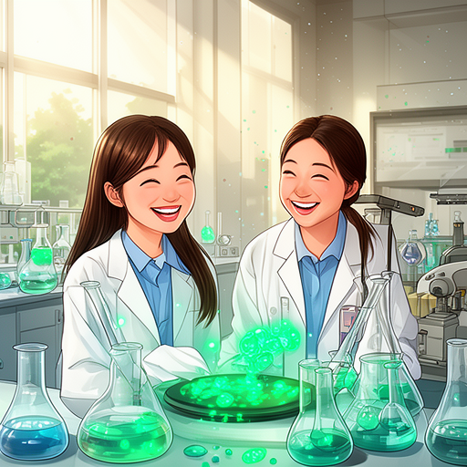

#24🏛️ 理学部・化学科 ／ 化学生物学（ケミカルバイオロジー）研究室
生きている細胞の中でパチンと留める分子のバックル――「カチッ」と鳴る科学の扉を開く少女たち（第 1 話）
🔬 クリックケミストリーと生体直交化学反応（Bioorthogonal Chemistry）による生細胞内糖鎖・分子イメージング
「フラスコの中なら簡単に繋がる化学反応も、水やタンパク質がいっぱいの生きている細胞の中では邪魔されてうまくいかない。でも、他のどんな生体分子とも反応せず、狙った相手とだけシートベルトのバックルみたいに『カチッ（Click）』と繋がる反応があるの」――詩織助教の言葉に引き込まれた咲良。細胞を傷つけずに表面の糖鎖を光らせて観察する『生体直交化学（ノーベル化学賞）』の実験を通じ、化学が生命の謎を照らす懐中電灯になることを知る。